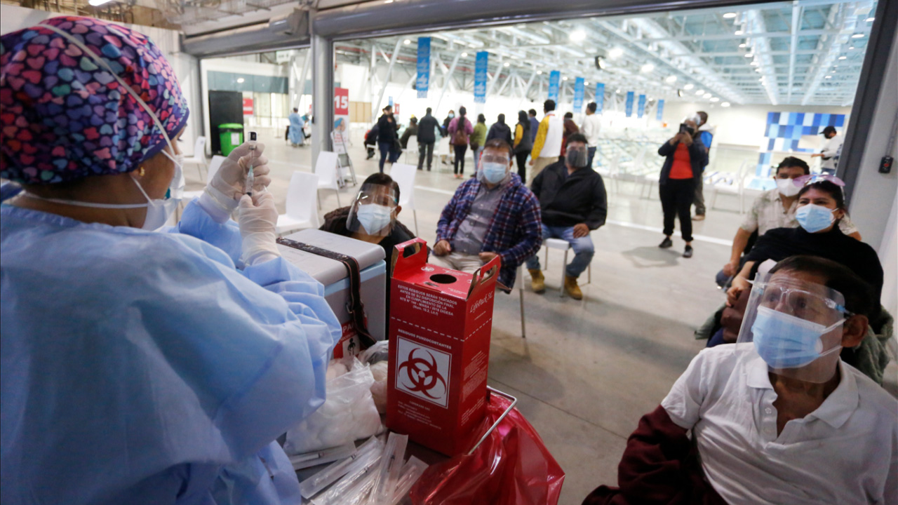
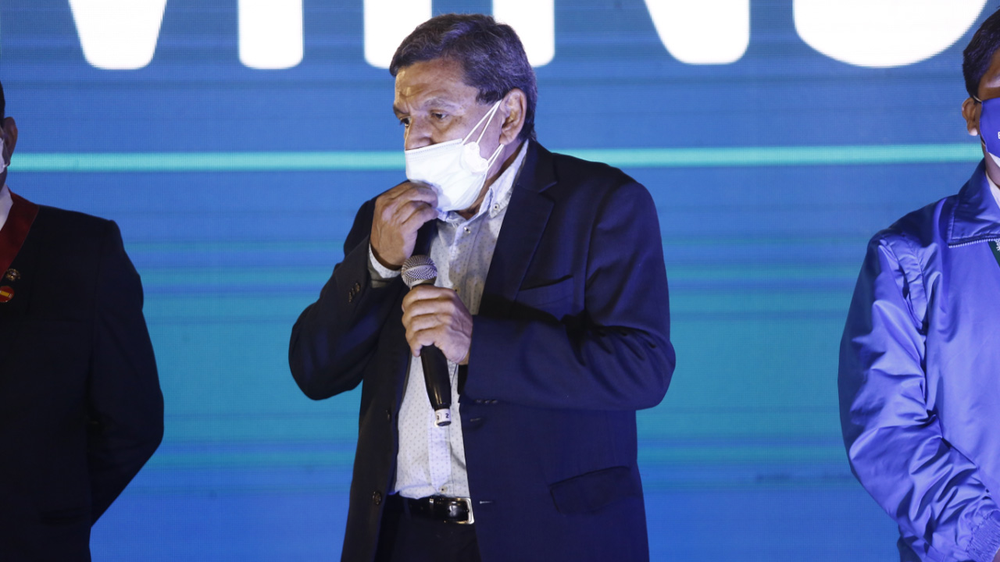

Por: Alexis Revollé / Unidad LR Data
Publicado el 02 de septiembre de 2021
Casi dos meses han pasado desde la primera Vacunatón, iniciativa del Ministerio de Salud (Minsa) que nació con el objetivo de potenciar el despliegue de inmunización contra la COVID-19 en todo el país. Jornada a jornada, su evolución ha consistido en sumar regiones a la estrategia y aplicar vacunas a medida que arribaban lotes con el fármaco. Sin embargo, los números apuntan a que el alcance conseguido pudo haber sido mucho mayor.
Un análisis de las cifras que dejaron las primeras seis jornadas arroja algunas luces sobre el impacto real que ha tenido la Vacunatón en la aspiración de tener una población protegida frente a la pandemia. Entre días exitosos, desfases regionales y metas que no se cumplieron, se aplicaron en total 3.142.149 dosis, según datos —siempre en permanente actualización— del portal Reunis del Minsa.
Dicha cifra representa el 16.8 % de las 18.540.349 dosis aplicadas hasta el 29 de agosto —fecha en que concluyó la sexta Vacunatón—, es decir, la iniciativa ha significado más de la décima parte de la vacunación total hasta ahora. Pero debió ser más. Una semana antes, se anunció que la meta nacional propuesta por el Gobierno para la quinta jornada, 600.000 dosis, no se había alcanzado. Al día siguiente se confirmó que se inocularon a 559.617 personas, con lo que más de 40.000 dosis quedaron en el aire.
“La quinta Vacunatón dejó al descubierto varios inconvenientes que ha tenido desde que empezó a expandirse a más regiones. Por ejemplo, se sabe que en Lima hubo centros de vacunación vacíos y poca respuesta ese fin de semana. ¿A qué se debió? A que la información falsa le está ganando la batalla al desempeño comunicacional del Gobierno. No se puede permitir que la desinformación sea más efectiva que la verdad, pero lo cierto es que mucha gente sigue negándose a recibir vacunas de ciertos laboratorios. Eso por no hablar de la brecha amplia entre primeras y segundas dosis aplicadas. Hay varios temas por mejorar”, sostiene Natalia Campos, investigadora y especialista en salud pública.
Fechas clave
El domingo 22 de agosto, mientras en Lima decenas de ciudadanos reportaban vacunatorios vacíos, en Tacna se superaba la meta regional propuesta con más de 13.000 dosis aplicadas. A la vez, más de diez regiones se sumaban a la Vacunatón y habilitaban espacios para recibir al público. Un escenario que, si bien fue resultado de una labor en expansión, puso de manifiesto un avance desigual, no siempre en consonancia con las necesidades de cada zona del país.
Un caso a revisar se produjo durante aquella jornada —21 y 22 de agosto— en las regiones de Amazonas y Áncash. En la primera, se aplicaron 12.701 dosis dentro del marco de la Vacunatón. En la segunda, 5.011. De acuerdo al INEI, Áncash posee más del doble de población que Amazonas —1.180.638 frente a 426.806, respectivamente—, pero los números de la Vacunatón harían pensar lo contrario.
Para Luciano Vargas, ingeniero informático y analista de datos, los motivos que explican este desequilibrio podrían estar relacionados al alcance de la vacunación. “Sí, llama la atención que una región vacune a más gente que otra cuando tiene la mitad de su población. Y sobre todo cuando se ha dicho que la Vacunatón tiene como uno de sus propósitos nivelar los alcances. Pero recordemos que, en ese caso específico, hasta la fecha en Áncash se ha logrado una cobertura mayor que en Amazonas. La diferencia no es tanta, rodea un 5%, pero está ahí”, apunta.
“Lo normal es que este tipo de desfases se vayan corrigiendo. Días antes de esa jornada, a ambas regiones habían llegado lotes con más de 20.000 vacunas. Así que no es un tema de distribución. Sería ideal que se desarrolle un plan unificado de comunicación con la ciudadanía, pero por el momento cada región está desarrollando sus propias estrategias a través de las Diresas”, señala Campos.
En efecto, según información del Cenares, el 17 de agosto llegaron a Áncash 23.510 dosis de la vacuna contra la COVID-19, entre Pfizer y Sinopharm. A Amazonas, el 19 de agosto, arribaron 22.340, fabricadas por los mismos laboratorios. De modo que, días previos a la quinta Vacunatón, las dos regiones se habían abastecido de una cantidad similar.
Las cifras del temor
En paralelo, múltiples puntos de la capital se inundaban de desconfianza. Renzo Zeballos, de 43 años, narra que el domingo 22 de agosto, durante la quinta Vacunatón, su familia le insistió para que acudiera al vacunatorio del Parque de las Leyendas, en San Miguel. Él se negó. “Me he quedado solo con una dosis porque no quiero volver a tener los síntomas que pasé después de esa vacuna que me pusieron”, explica.
Zeballos confiesa que, tras la primera aplicación del suero, quedó adolorido y sufrió mareos durante los días posteriores. Y hasta el momento, afirma, nadie lo ha convencido de volver al vacunatorio por su segunda dosis. “Mis hermanos y mi esposa me insisten para que me ponga la vacuna. No sé, no me da confianza. Si con una me sentí así, imagínate si me pongo la otra”, alega.

Vacunatorios en Lima no se llenaron durante la quinta Vacunatón (Foto: Carlos Contreras / GLR)
Otros testimonios sugieren que la atmósfera de escepticismo se extendió hasta el Callao. Maritza Moran, vecina de La Perla, pudo vacunarse también durante la quinta Vacunatón. Al estadio Campolo Alcalde, ubicado a solo dos cuadras de su casa, llegaron ese día cientos de personas. Ella, sin embargo, rechazó la oportunidad.
“Me habían contado que ya no llegaban vacunas de Pfizer. Una compañera del trabajo me dijo que solo estaban trayendo la [vacuna] china. No iba a ir a que me pongan esa si ya han salido varias cosas de que no es buena. Así que ese fin de semana, mejor, me quedé en mi casa. Sí me voy a vacunar, pero todavía no me siento muy segura”, cuenta la mujer de 39 años, víctima de la desinformación en torno a Sinopharm.
Los números corroboran la deserción capitalina. La quinta Vacunatón ha sido la de menor repercusión en Lima, con tan solo 217.057 dosis aplicadas. Incluso en la sexta jornada, cuando la iniciativa se expandió a más regiones, el alcance fue mayor en la capital: 232.672 dosis se aplicaron. En la primera Vacunatón se consiguió aplicar 247.488 sueros en Lima; en la segunda, 228.823. La tercera y la cuarta fueron las más productivas: 425.963 y 451.502 dosis aplicadas respectivamente.
Avance importante
La cuarta jornada —6, 7 y 8 de agosto— fue significativa debido a su alcance. Un primer vistazo da cuenta de un dato insoslayable: en ella se desarrolló la fecha en que más dosis se aplicaron a nivel nacional, desde febrero hasta ahora. Fue el domingo 7 de agosto, día en que se contabilizaron 487.536, de las cuales 355.008 se administraron como parte de la Vacunatón. Un 72.8% del total de dosis aplicadas ese día.
Durante los tres días de la cuarta Vacunatón se aplicaron 820.946 dosis. Bastante más que la meta propuesta en dichas fechas, fijada en 600.000. Con ello, a la tarea de extender la iniciativa a siete regiones aparte de Lima y Callao, se sumó el éxito de una meta cumplida.
“Hay que recordar que la Vacunatón nace como un complemento al ritmo establecido para la vacunación. No se ha hecho para reemplazar esa cobertura. Los pasos que va dando los tenemos que medir de ese modo, para evitar malas interpretaciones. En ese sentido, se debe resaltar el alcance que tuvo la cuarta jornada en varias regiones del país”, enfatiza el exministro de Salud, Oscar Ugarte.
Asimismo, esta jornada presentó una característica especial: ha sido la única hasta ahora en que se inocularon más dosis durante el segundo día. En la fecha inicial, la subsecuente y la última se aplicaron 176.321, 355.843 y 288.782 dosis respectivamente. Todas las demás han tenido al primer día como el más productivo en cuanto a la aplicación del fármaco.
“Por mucho, esa cuarta jornada ha sido la más fructífera. Se superó la meta nacional con ventaja, se incluyó a regiones que estaban rezagadas y se demostró que se puede enfrentar la desinformación. Un 60% de las dosis aplicadas fueron de Sinopharm, eso es un aspecto a tomar en cuenta”, resalta Vargas.
Brecha por cerrar
En medio de logros y tropiezos, otro aspecto a tratar continúa siendo la distancia entre las primeras y segundas dosis que se aplican. Ciertamente, la Vacunatón es una oportunidad de avance en ese camino. Sin embargo, las cifras no reflejan un salto importante respecto a conseguir la vacunación completa de la ciudadanía.
Durante sus cinco primeras jornadas, en la Vacunatón 1.541.292 dosis respondieron a una primera aplicación, y 746.119 a una segunda. De entrada, es notable la diferencia entre ambos números. La cantidad de primeras dosis administradas es más del doble que las segundas. El tema a evaluar es si el último grupo marca o no una diferencia.
Hasta el 22 de agosto, 7.641.416 personas en todo el país habían recibido las dos dosis. Así, las inmunizaciones que se completaron en cinco jornadas de la Vacunatón representaron el 9.7% del total nacional. Un aporte que, de acuerdo a especialistas, se quedó corto a raíz de diversos factores.
“Hay dos asuntos principales que impiden que se acorte esa distancia entre vacunaciones completas e incompletas, aunque al final todo tiene que ver con la información. Primero, está la gente que se sintió mal luego de la primera y no quiso volver por su segunda dosis. Y, segundo, no ha habido un mensaje contundente que disipe los temores ante la vacuna de Sinopharm. La salud pública depende, en gran medida, de que las voluntades de ciudadanía y autoridades sanitarias trabajen de la mano. Y por desgracia eso no está pasando como debería”, lamenta Campos.
No obstante, los datos consignados en Reunis apuntan a que dicha tendencia ha variado según la región. En Piura, por ejemplo, en la quinta Vacunatón se aplicaron 3.093 primeras y 39.572 segundas dosis. Es decir, allí las personas que completaron su inmunización contra la COVID-19 superaron por 36.479 a quienes recibieron el suero por primera vez. La situación se repitió en Amazonas, Huancavelica, Moquegua y Cusco.
“Una vez que se han repartido los lotes, buena parte del resto depende de cada Dirección Regional [Diresa], en cuanto a la manera en que va a enfocar su campaña para la Vacunatón. Algunas pueden dar prioridad a que su población se termine de vacunar y otras a que se pongan su primera dosis. Eso se da de acuerdo a las necesidades que haya visto la autoridad regional”, especifica Ugarte.

El ministro Cevallos dio el reporte tras la quinta Vacunatón. No se llegó a la meta. (Foto: Marco Cotrina / GLR)
Pese a todo, el panorama ha cambiado ligeramente tras la sexta jornada. Ha sido la única en la que se ha aplicado más segundas dosis que primeras: 372.742 frente a 320.293, siguiendo los datos de Reunis hasta el cierre de este informe.
“Lo que sabemos es que la actual gestión, con el ministro Cevallos, está poniendo énfasis en nivelar esa diferencia. Los datos marcan una tendencia y es que sí se está acercando a ambos grupos. La quinta jornada fue clave para eso, y lo que se hizo en la sexta fue determinante también. Sobre todo, en la aspiración del Gobierno por alcanzar los 8 millones de vacunados hasta fin de agosto”, puntualiza Vargas.
Cobertura en desarrollo
Tras un año y medio de pandemia, el futuro continúa siendo incierto. La tercera ola permanece al acecho y, mientras tanto, los despliegues de vacunación en todo el país necesitan la llegada de nuevos lotes para mantenerse en movimiento. El pasado jueves 26 de agosto, el Minsa reportó 10 fallecimientos por COVID-19 en esas últimas 24 horas, una de las cifras más bajas desde que se desató la primera ola, a mediados de 2020.
¿Han tenido un impacto en ello las jornadas de la Vacunatón? El comportamiento de la curva descendente de decesos no lo refleja. Entre el 10 de junio y el 9 de julio, mes previo al inicio de la Vacunatón, cada semana hubo, en promedio, entre 40 y 50 muertes menos. Luego de ello, el descenso se mantuvo en parámetros semejantes.
“Por ahora, no es posible determinar si la Vacunatón ha tenido un efecto en el promedio de muertes semanales. Lo que arroja la data es que el descenso se ha mantenido. Si con esa iniciativa se acelera el descenso quizá lo veremos después de algunas jornadas más. Lo importante ahora es prevenir que el ritmo en que bajan los fallecimientos no cambie demasiado frente a una eventual tercera ola”, advierte Vargas.
Campos, por su parte, indica que solo si se intensifica el alcance se vería ese impacto. “La Vacunatón es una iniciativa positiva, y debe tener una estrategia más agresiva si se quiere evitar que se quede en eso, en una simple iniciativa. Desde luego, se están salvando vidas, pero se puede hacer mucho más. Urge una nueva estrategia, un plan nacional que no deje a la población a merced de sus Gobiernos Regionales, que muchas veces toman decisiones equivocadas. Con eso y una comunicación más certera, las muertes van a seguir bajando y la Vacunatón va a tener mucho que ver en eso”, afirma.
Este sábado 4 y domingo 5 de setiembre, se desarrollará la sétima Vacunatón, según el ministro Cevallos. De nuevo, se ha determinado una meta de 600.000 dosis a aplicar, una cifra que, se espera, pueda volver a alcanzarse.